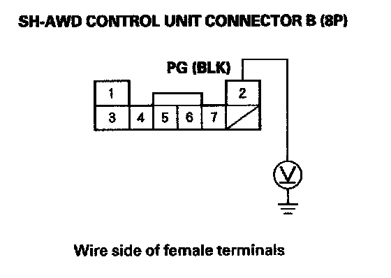
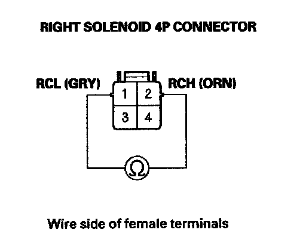
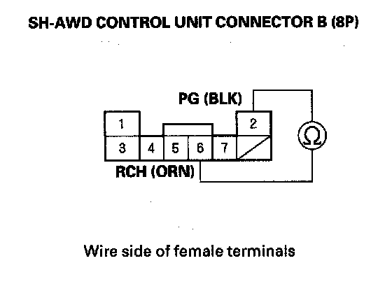
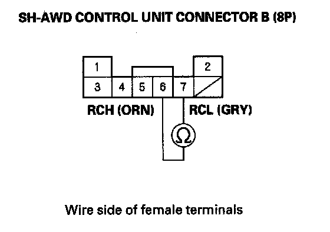
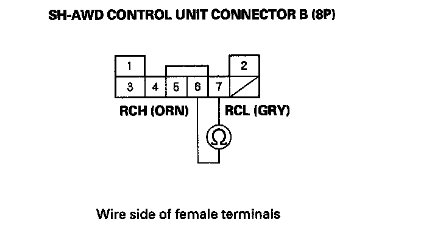
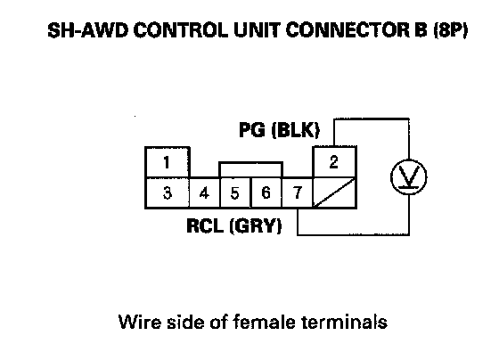
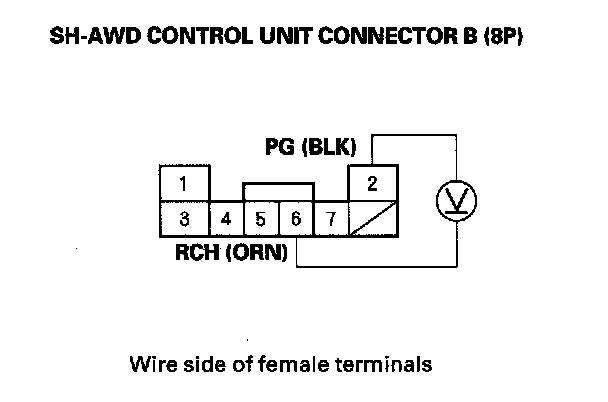

DTC 56-3
DTC 56-3: Right Clutch Electromagnetic Coil Current MalfunctionNOTE: Before you troubleshoot, review the general troubleshooting information.
1. Turn the ignition switch ON (II).
2. Clear the DTC with the HDS.
3. Do the clutch function test with the HDS.
4. Check for DTCs with the HDS.
Is DTC 56-3 indicated?
YES - Go to step 5.
NO - Intermittent failure, the system is OK at this time.
5. Check for voltage between SH-AWD control unit connector terminals B2 and body ground.

Is there less than 0.5 V?
YES - Go to step 6.
NO - Repair open in the wire between SH-AWD control unit connector B and body ground or poor ground (G603).
6. Turn the ignition switch OFF.
7. Disconnect SH-AWD control unit connector B (8P).
8. Connect a jumper wire between SH-AWD control unit connector terminals B6 and B7. Disconnect the right solenoid 4P connector, then check for continuity between right solenoid 4P connector terminals No. 1 and No. 2.


Is there continuity?
YES - Go to step 9.
NO - Repair open in the wire between the SH-AWD control unit and the right clutch electromagnetic coil.
9. Remove the jumper wire from SH-AWD control unit connector terminals B6 and B7.
10. Check for continuity between SH-AWD control unit connector terminals B2 and B6, then check for continuity between SH-AWD control unit connector terminals B2 and B7.


Is there continuity?
YES - Repair short to ground or short to the ground wire between the SH-AWD control unit and the right clutch electromagnetic coil.
NO - Go to step 11.
11. Check for continuity between SH-AWD control unit connector terminals B6 and B7.

Is there continuity?
YES - Repair short in the wires between the SH-AWD control unit and the right clutch electromagnetic coil.
NO - Go to step 12.
12. Turn the ignition switch ON (II).
13. Measure voltage between SH-AWD control unit connector terminals B2 and B7.

Is there more than 0.5 V?
YES - Repair short to power in the wire between SH-AWD control unit and the right clutch electromagnetic coil.
NO - Go to step 14.
14. Measure voltage between SH-AWD control unit connector terminals B2 and B6.

Is there more than 0.5 V?
YES - Repair short to power in the wire between the SH-AWD control unit connector terminal B6 and right clutch electromagnetic coil.
NO - Update the SH-AWD control unit if it does not have the latest software or substitute a known-good SH-AWD control unit and recheck. If the symptom/indication goes away with the updated SH-AWD control unit, troubleshooting is complete. If the symptom/indication goes away with a known-good SH-AWD control unit, replace the original SH-AWD control unit.